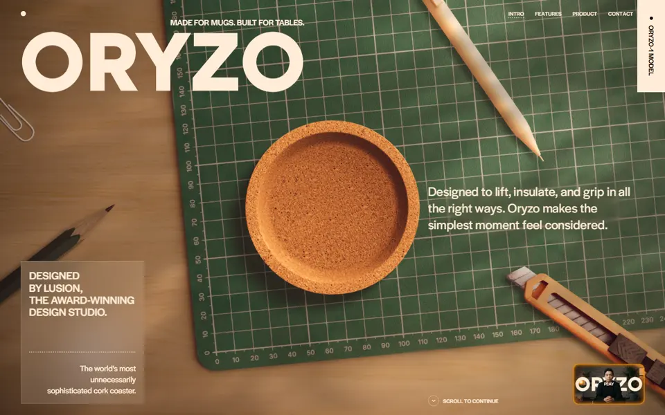
Oryzo
Lusion · Awwwards 이달의 사이트 2026.04
코르크 컵받침 하나가 스크롤에 따라 돌고, 다가오고, 손에 들리며 장면이 바뀌어요. 팔지 않는 가짜 제품으로 스튜디오 실력을 보여 주는 사이트예요.
가능모양이 단순해서 Blender 모델 + Three.js 스크롤 카메라로 만들 수 있어요.
제가 만든 데모 · 청자 머그 →보내 준 릴스 세 편 속 사이트를 실제로 열어 코드까지 확인했어요. 그리고 제가 만들 수 있는지는 말보다 데모로 — 아래에 직접 만든 세 개가 들어 있어요. 비슷한 요즘 사이트는 7곳 더 모아 뒀어요. 그중 작업실에 맞는 기법은 작업실 내용으로 4개, 더 역동적인 것은 4개 더 만들어 봤어요.
세 사이트의 기술은 전부 무료 도구(GSAP, Lenis, Three.js)예요. 코드는 제가 다 짤 수 있어요.
간단한 3D는 노트북에 깔린 Blender로 제가 만들어요. 사진처럼 보이는 영상은 AI 영상 도구(Kling·Veo) 계정이 있어야 해요.
Quai Network는 3D 아티스트까지 있는 스튜디오 작품이에요. 같은 구조의 단순한 버전부터 시작할 수 있어요.
ignitrondev.space · @xiaobima___
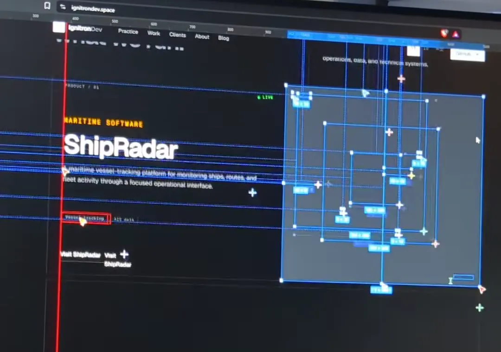
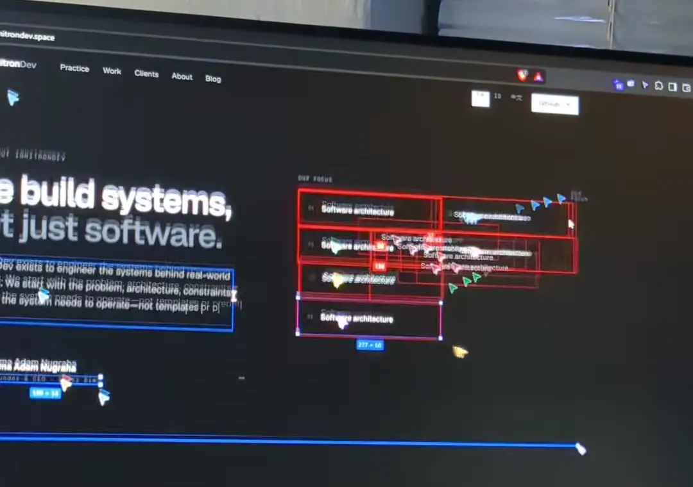
보이는 것
피그마에서 여럿이 같이 작업하는 화면처럼, 색색의 커서가 날아와 상자를 긋고 크기를 달고 글자를 쳐 넣으면서 섹션이 하나씩 지어져요. 스크롤을 내릴 때마다 다음 섹션이 같은 식으로 조립돼요.
만든 방법
사이트 코드를 받아 확인한 재료:
Astro 페이지 + GSAP ScrollTrigger(스크롤 위치에 맞춰 움직임 실행) + Lenis(부드러운 스크롤)HeroLogo3D)커서 효과의 원리는 단순해요. 화면 요소의 위치·크기를 읽고 → 그 위에 상자·크기 표시·커서를 겹쳐 그리고 → 순서대로 움직인 뒤 → 진짜 요소를 보여 줘요.
11월 4일에 열어 본 사이트 첫 화면엔 이 효과 없이 완성 화면만 나왔어요. 영상을 찍은 뒤 바뀌었을 수 있어요.
제가 할 수 있나
가능혼자 다 돼요. 아래가 직접 짠 것(라이브러리 없이 브라우저 기능만).
SOONGSIL · AI SOFTWARE
게임, 공부 도구, 생활 자동화. 한 학기 동안 만든 것들을 한곳에 모았어요.
"Websites in 2026" · @w.wearebrand
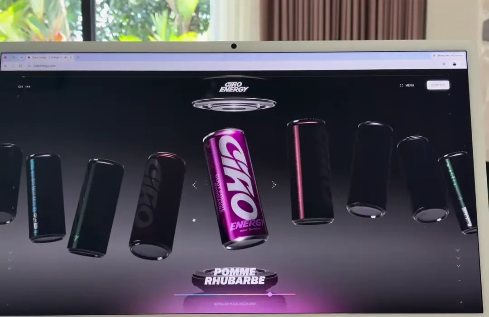
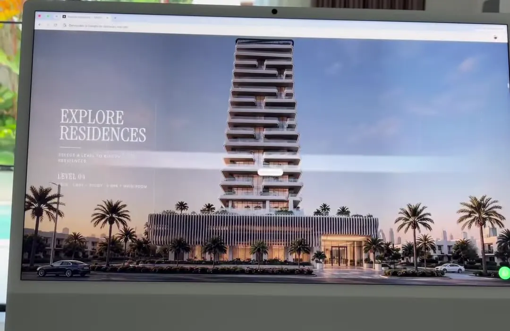
보이는 것
프랑스 에너지 음료 Ciro Energy는 3D 캔 아홉 개가 떠서 돌고, 고른 맛에 따라 색이 바뀌어요. 두바이 분양 단지 Reposé Residence는 구름 위에서 시작해 스크롤할수록 단지·건물·로비·수영장으로 카메라가 내려가요.
만든 방법
올해 이런 사이트를 만드는 흐름:
제가 할 수 있나
코드 가능3D 캔(데모 B), 스크롤 영상(데모 C) 둘 다 직접 만들었어요.
소재사진 같은 영상은 제가 못 만들어요. AI 영상 도구에서 뽑아 주면 연결은 제가 해요.
자두PLUM · 01 / 07
↓ 천천히 내려 보세요
하늘 위에서
도시를 지나
탑 앞까지.
001 / 100
qu.ai · @ngocbuildswebsites
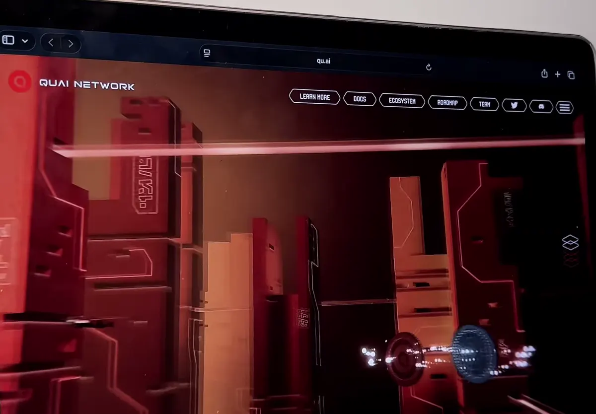
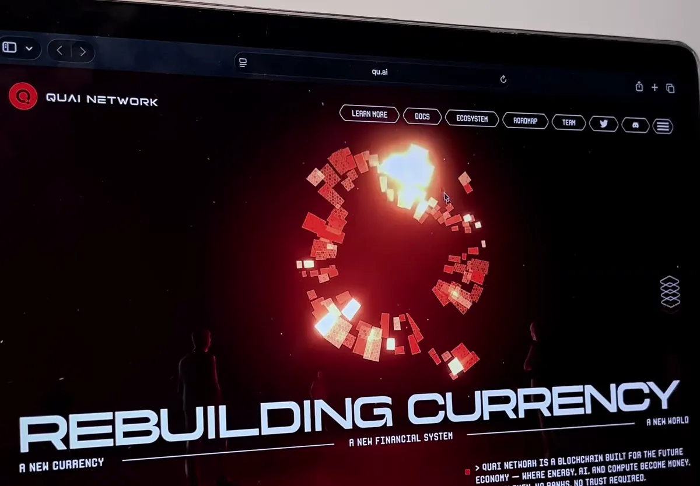
사실 확인
릴스 문구는 "ChatGPT에서 Claude Code로 바꾼 뒤의 웹사이트"지만, 이 사이트는 블록체인 회사 Quai Network의 공식 사이트(qu.ai)이고 Unseen Studio가 2023년 1월에 만든 작품이에요. Awwwards·CSSDA·FWA에서 '오늘의 사이트'를 받았어요.
릴스 셋 중 둘이 "댓글 달면 보내 줄게요"로 끝나요. 팔로워와 연락처를 모으는 광고라, 문구 속 도구 이름은 실제 제작 도구와 다를 수 있어요.
만든 방법
사이트 코드에서 확인한 재료:
Next.js 페이지 위에 WebGL 3D 장면.ktx2)와 라이트맵 — 3D 프로그램에서 빛과 그림자를 미리 그림으로 구워 둔 것. 웹에선 카메라만 실시간으로 움직여서 가볍게 돌아가요.즉 3D 프로그램에서 건물·사람을 모델링하고 → 빛을 굽고 → 웹에서 스크롤에 맞춰 카메라를 옮기는 구조예요.
제가 할 수 있나
구조만장면 불러오기·카메라 이동·스크롤 연결은 데모 B·C의 연장이라 가능해요. 이 수준의 건물·조명·연출은 3D 아트 작업이 커서, 단순한 장면부터 쌓아야 해요.
더 찾아본 사이트
2025~2026년 수상작과 3D 사이트 모음에서 14곳을 골라 직접 열어 보고, 움직임이 확실한 7곳만 남겼어요. 7곳 모두 브라우저 3D 그리기(캔버스)를 써요. 그림을 누르면 원본이, 초록 링크를 누르면 같은 기법으로 제가 만든 데모가 열려요.
3D 물건을 스크롤로 돌려 보기

Lusion · Awwwards 이달의 사이트 2026.04
코르크 컵받침 하나가 스크롤에 따라 돌고, 다가오고, 손에 들리며 장면이 바뀌어요. 팔지 않는 가짜 제품으로 스튜디오 실력을 보여 주는 사이트예요.
가능모양이 단순해서 Blender 모델 + Three.js 스크롤 카메라로 만들 수 있어요.
제가 만든 데모 · 청자 머그 →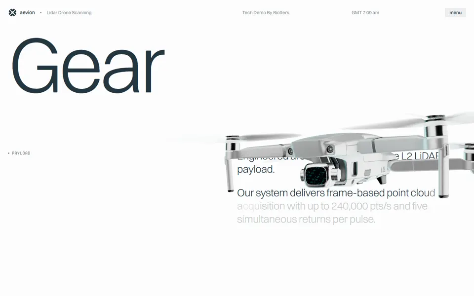
Riotters · Awwwards 오늘의 사이트 2026.10.06
3D 드론이 스크롤 따라 기울고 돌며 화면 가운데로 오고, 옆 설명이 부품·성능 순서로 바뀌어요.
소재이만큼 정밀한 드론 모델은 사거나 무료 모델을 받아야 해요. 움직임 연결은 제가 해요.
제가 만든 데모 · 점검 드론 →3D 풍경 속을 날아가기
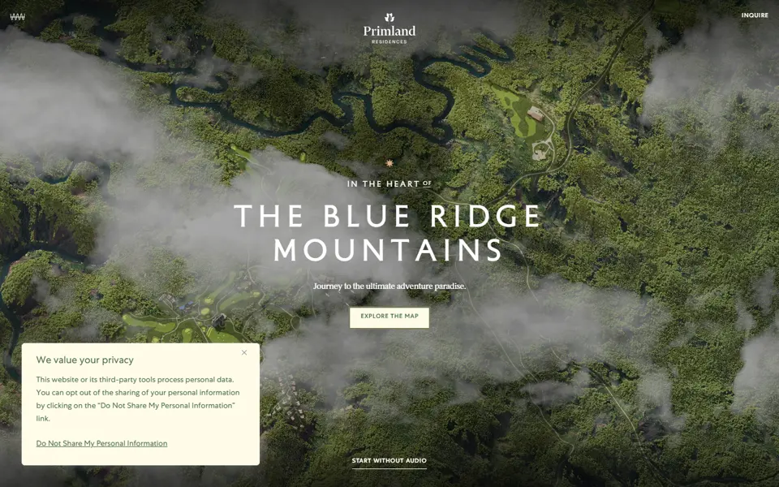
Awwwards 우수작 2025.12
미국 블루리지 산맥 리조트 사이트예요. 구름을 뚫고 내려가 산과 강 위를 날아다니고, 소리를 켜고 보는 구성이에요. 영상이 아니라 실시간 3D라 원하는 곳으로 움직여요.
소재실제 지형 높이 데이터와 위성사진이 있으면 Three.js로 가능해요. 구름·나무를 얼마나 그럴듯하게 하느냐가 관건이에요.
제가 만든 데모 · 마디 산장 →글자·입자가 흩어졌다 모이기
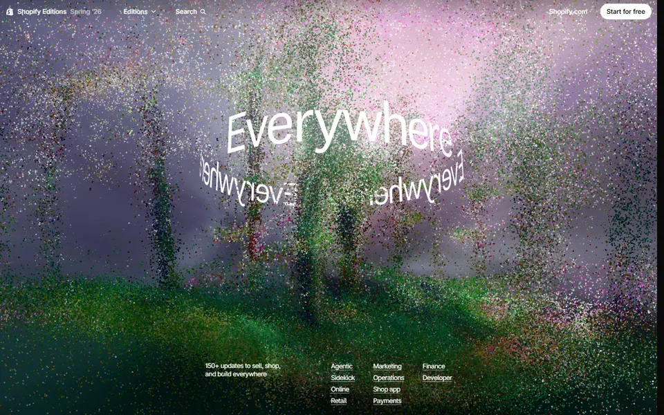
Shopify · 2026 봄 신기능 발표
숲 장면이 점 수만 개로 흩날리고, 글자가 공중에서 휘어 돌아요. 스크롤하면 장면이 입자로 부서지며 다음 소개로 넘어가요.
가능점 수만 개를 그래픽카드에서 움직이는 Three.js 기본 기법이에요.
제가 만든 데모 · 흩어지고 모이는 점 →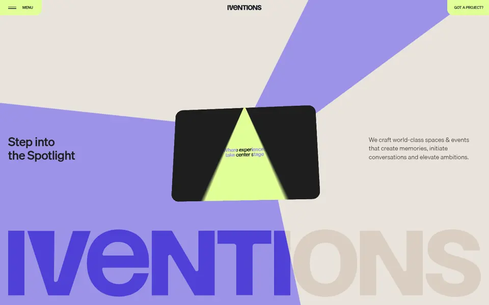
행사 기획사 · CSSDA 이달의 사이트 2025.10
무대 조명 같은 빛기둥이 3D 카드를 비추고, 카드가 기울며 프로젝트가 하나씩 나와요. 아래로 가면 고객사 이름이 크게 흘러가요.
가능카드 한 장 + 빛 + 스크롤 연결이라 데모 B 수준이에요.
제가 만든 데모 · 무대 위 카드 →사이트가 곧 게임
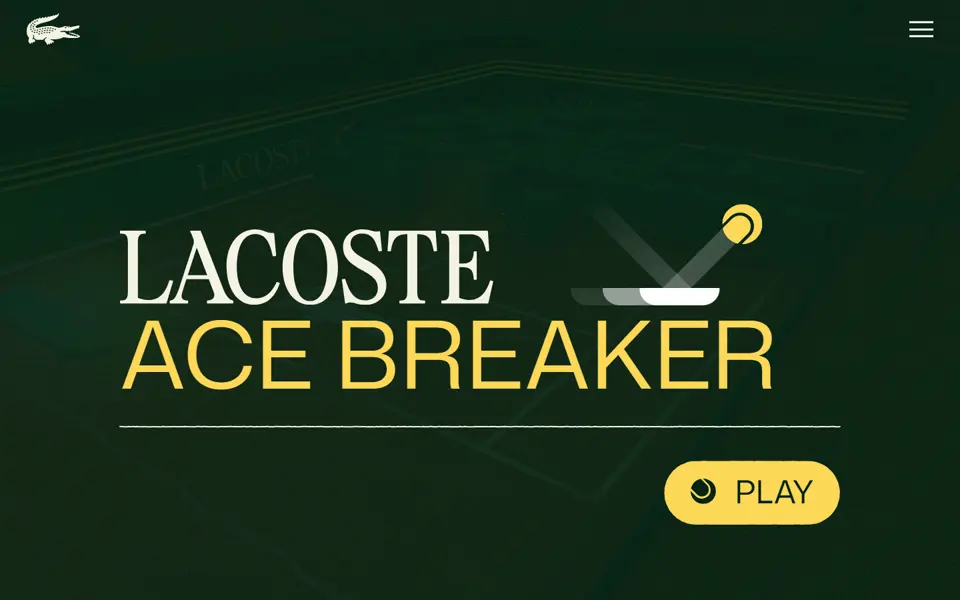
Lacoste · 롤랑가로스 회원 이벤트
테니스공으로 벽돌을 깨는 게임이에요. 점수판과 경품이 걸려 있어서 광고 대신 사람들이 계속 다시 하게 만들어요.
가능마디·넋굿처럼 게임을 만들던 방식 그대로 웹으로 옮기면 돼요.
제가 만든 데모 · 마감 깨기 →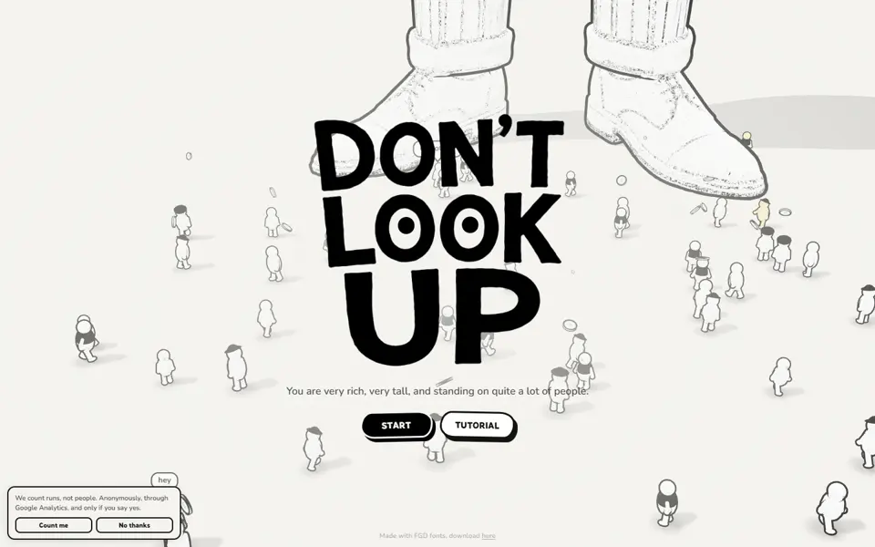
Marcelo Reis Melo · Awwwards 오늘의 사이트 2026.11.01
아주 크고 부자인 '나'가 사람들 위에 서서, 아무도 위를 올려다보지 못하게 하는 손그림 게임이에요. 개인 한 명이 만들어 수상했어요.
소재게임 코드는 가능해요. 이 손그림 느낌은 그림 소재가 있어야 해요.
제가 만든 데모 · 올려다봐 →2026.11.05 · 작업실에 적용
위 기법 가운데 작업실에 실제로 쓸 만한 셋을 골라 작업실 첫 화면의 작품·그림·저장 기록으로 만들고, 작품마다 옷을 갈아입는 쫄라맨을 하나 더 만들었어요. 색과 글꼴은 작업실 첫 화면 그대로예요.
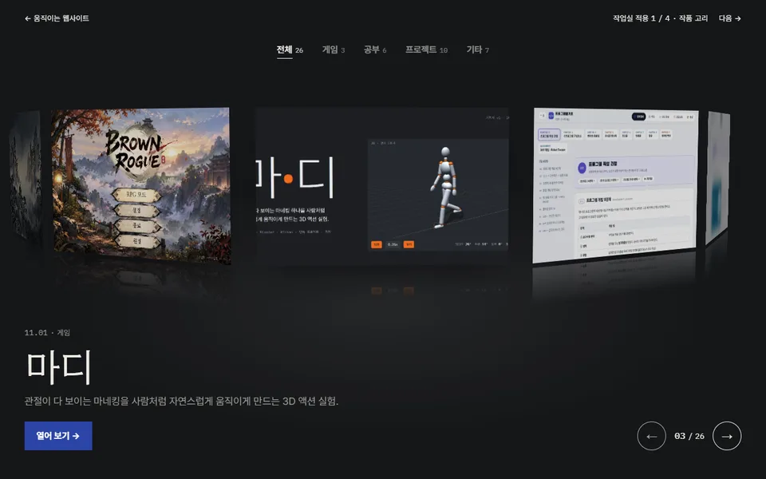
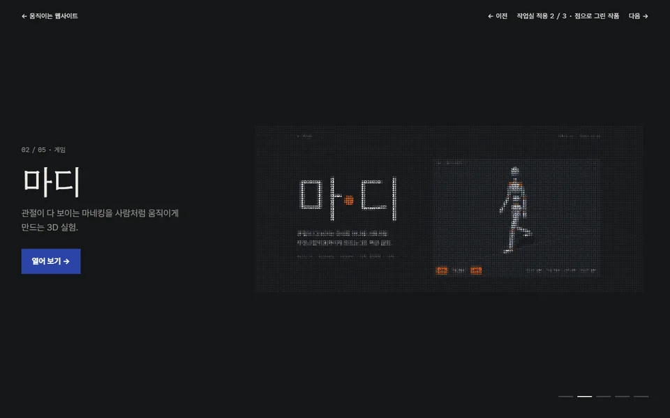
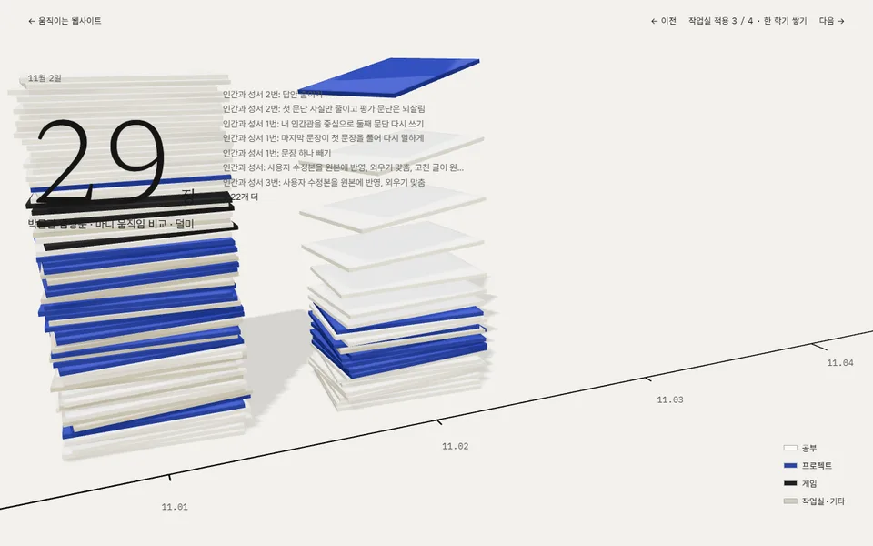
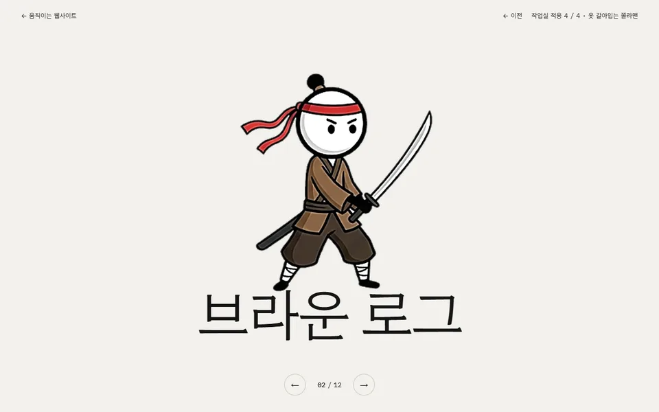
작품 고리 → 작품 12개를 한 캐릭터가 연기
화면엔 쫄라맨과 작품 제목만 있어요. 브라운 로그에선 무사 옷을 입고 칼을 휘두르고, 넋굿에선 여우 귀·꼬리를 달고 부적을 던져 오행 다섯 색으로 터뜨려요. 다른 작품으로 넘기면 공중제비를 돌며 옷과 소품이 날아가고, 제목 글자가 떨어지고, 새 제목 위에 내려앉아 새 옷이 하나씩 떨어져 입혀져요. 그림 파일 없이 전부 코드로 그렸어요.
쓸 곳첫 화면 맨 위 인사, 작품 소개 페이지 첫 장면
열어 보기 →2026.11.05 · 더 역동적인
Awwwards 10월~11월 오늘의 사이트 31곳을 훑고 9곳을 직접 열어 봤어요. 위에서 다룬 3D 물건·입자와 겹치지 않고, 사람이 밀고 던지고 모는 느낌이 나는 네 갈래만 골라 작업실 작품으로 다시 만들었어요.
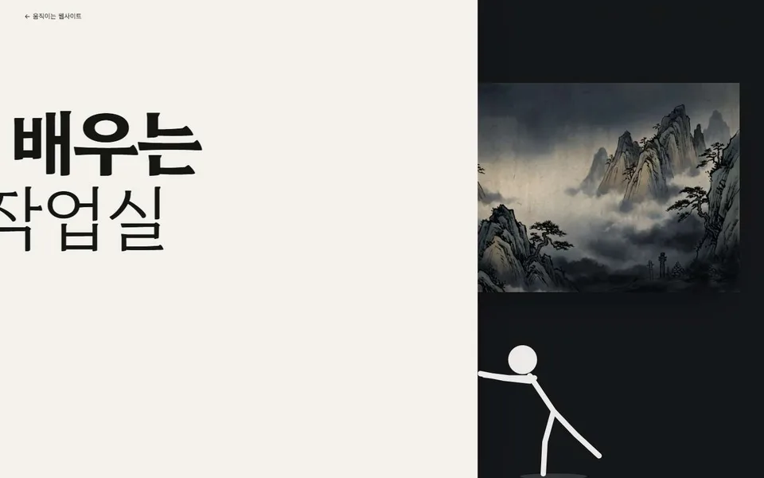
Huy Phan Vol.2 · Awwwards 오늘의 사이트 2026.10.14
원본은 손그림 캐릭터가 스크롤에 맞춰 다음 화면을 몸으로 밀어 넣어요. 제 것은 쫄라맨이 작품 칸을 네 가지로 넘겨요 — 첫 화면을 밀어내고, 넋굿 칸을 바닥에서 들어 머리 위로 던지고, 줄을 당겨 레이싱 휠 칸을 끌어내리고, 걷어차서 넘어뜨려 우리달이 나와요. 전부 스크롤 위치에 묶여 있어서 올리면 거꾸로 돌아가요.
쓸 곳작업실 첫 화면 대신 '작품 소개 둘러보기' 한 페이지
열어 보기 →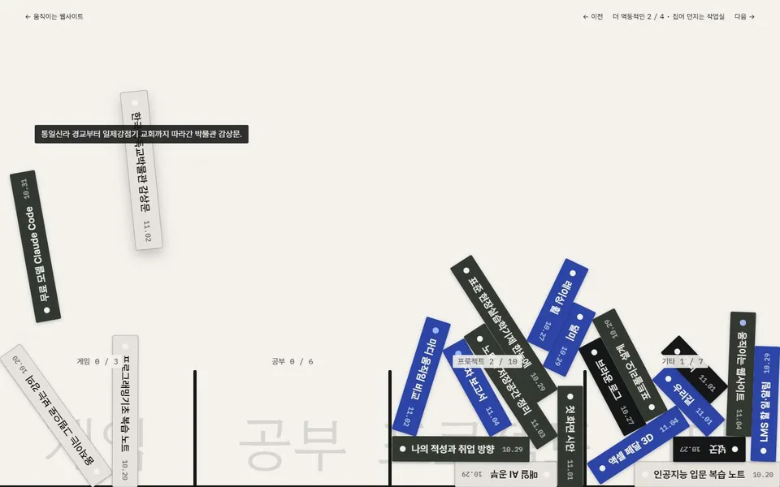
Grail · 오늘의 사이트 2026.11.04 · Bruno Simon 2025판
원본들은 물리 엔진(Matter.js·Rapier)으로 화면 속 물건이 떨어지고 부딪혀요. 제 것은 작품 이름표 26개가 쏟아져 쌓이고, 마우스로 집어 던져 네 분류 통에 넣어요. 통마다 맞게 넣은 개수가 올라가고, 집으면 한 줄 설명이 뜨고, 그냥 누르면 그 작품이 열리고, 빈 곳을 누르면 그 자리에서 펑 터져요.
쓸 곳첫 화면 맨 아래 '전체 작품'을 노는 칸으로
열어 보기 →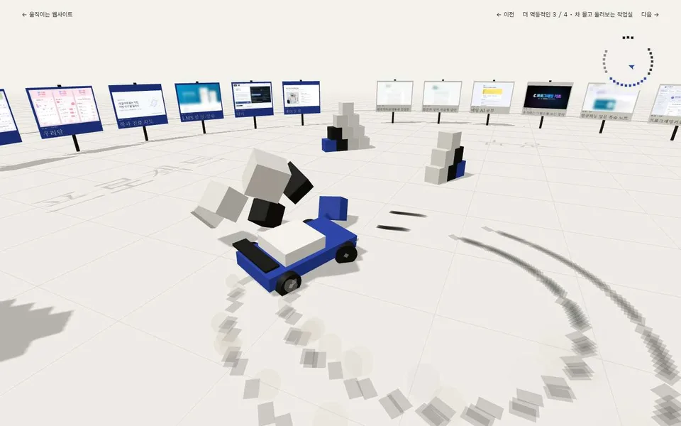
Awards Racing · 오늘의 사이트 2026.10.27
원본은 Three.js + Bullet 물리로 브라우저에서 드리프트 경주를 해요. 제 것은 레이싱 휠 팀의 파란 차를 몰고 작품 26개 표지판 사이를 달려요. 분류마다 동네가 하나, 표지판에 다가가면 아래에 작품 카드가 올라오고 Enter로 열려요. 스페이스로 미끄러지면 바퀴 자국이 남고, 상자 더미는 들이받으면 무너지고, 기둥에 부딪히면 표지판이 흔들려요. 폰은 화면을 끌어서 몰아요.
쓸 곳레이싱 휠 프로젝트 소개의 마지막 놀이 칸
열어 보기 →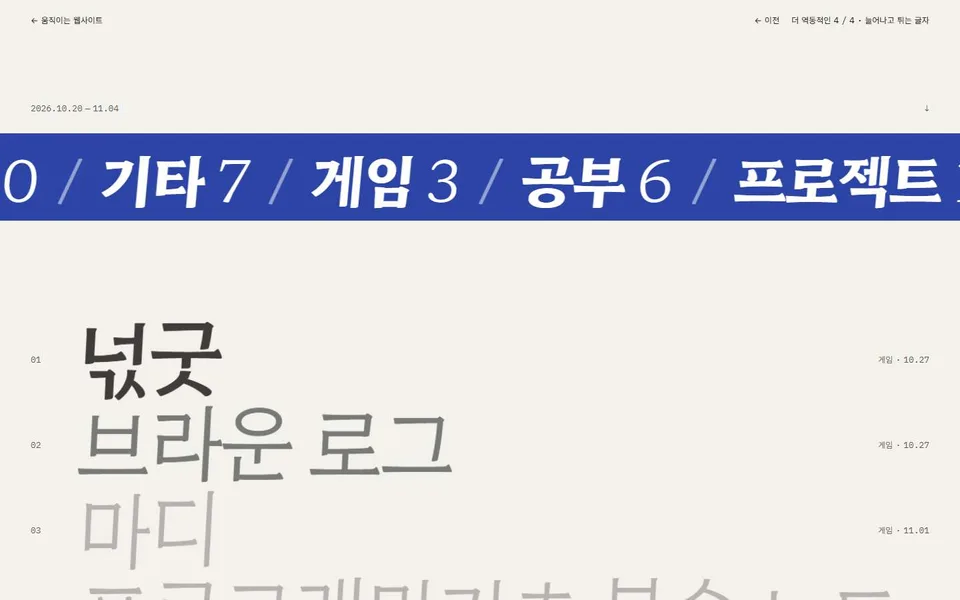
Mat Voyce · 오늘의 사이트 · Unbelievably Crap · 2026.10.29
원본들은 스크롤하는 세기에 맞춰 글자가 늘어나고 다시 튕겨 돌아와요. 제 것은 '작업실' 세 글자가 떨어져 튕기며 자리 잡고, 내리는 속도만큼 작품 제목 26줄이 기울고 늘어나고 굵어져요. 글자마다 조금씩 늦게 따라와 물결이 지고, 멈추면 고무줄처럼 돌아와요. 마우스를 올린 줄은 그 작품 그림이 따라오고, 끝에선 숫자 26이 굴러가 멈춰요.
쓸 곳작업실 첫 화면 작품 목록, 글이 많은 페이지 제목
열어 보기 →따라 하려면
| 도구 | 하는 일 | 비용 |
|---|---|---|
| GSAP + ScrollTrigger | 스크롤 위치에 맞춰 움직임 실행 (01·03 원본) | 무료 |
| Lenis | 스크롤을 미끄러지듯 부드럽게 | 무료 |
| Three.js | 브라우저에서 3D 그리기 (데모 B) | 무료 |
| Matter.js · cannon-es | 물리 엔진 — 떨어지고 부딪히고 무너짐 (던지기 2D · 운전 3D) | 무료 |
| Blender | 3D 모델·렌더 (데모 C) — 노트북에 4.5·5.2 설치돼 있음 | 무료 |
| Kling · Veo | 장면 두 장을 잇는 AI 영상 | 무료 체험은 조금, 넉넉히 쓰려면 유료 |